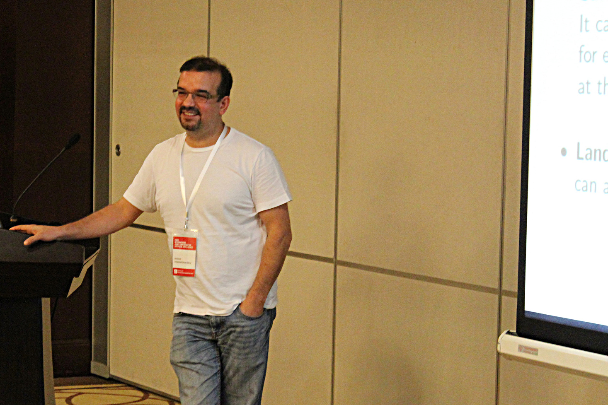

Prof. Blai Bonet
Matemáticas y Sistemas, 215-A
bonet AT usb DOT ve |
|
I received a MSc degree (1996) from Universidad Simón Bolívar under the
direction of Prof. Hector Geffner, and later a PhD degree (2004) from University
of California, Los Angeles, under the direction of Prof. Judea Pearl and Prof. Richard
Korf, both in Artificial Intelligence which is part of Computer Science.
I am a Professor of Computer Science at Universidad Simón Bolívar. My
research interests lie in the intersection of several disciplines including automated
planning, Bayesian networks, knowledge representation, heuristic search, SAT, etc.
I have developed several software for different types of planning systems, and for other
applications as well. Most of the software can be downloaded directly from here; for
others just send me an email.
|
belief-tracking: Engine and examples for belief tracking in planning with sensing. A movie showing an fully-autonomous agent using the belief-tracking algorithm to play minesweeper can be seen here.mdp-engine: Various algorithms for MDPs, including Anytime AO* and UCT from AAAI-12 paper.k_replanner: Replanner for Planning under Partial Observability (IJCAI-11).np2pddl: Automatic reductions of NP problems into STRIPS problems (ICAPS-11).cp2fsc: Automatic derivation of FSCs (ICAPS-09).gpt-rewards: GPT/rewards: solver for reward-based discounted POMDPs based on RTDP-Bel (IJCAI-09).mcdsat: McdSat/Minicon for QRPs (AAAI-06).dnnf-models: Model Enumerator for d-DNNF theories.mini-gpt: Planner used in the probabilistic track of IPC-4.LDFS+ (v.07.16.07): Learning in Depth-First Search; code used in ICAPS'06 paper".LDFS (v.05.10.04): Learning in Depth-First Search; code used in "An Algorithm Better Than AO*?".hsp-planners: The HSP family of planners.asp-planner: LRTA* Planner; see AAAI-97 paper.GPT Source (v.2.00 04/21/08)
Previous visitors: